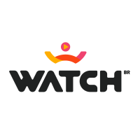
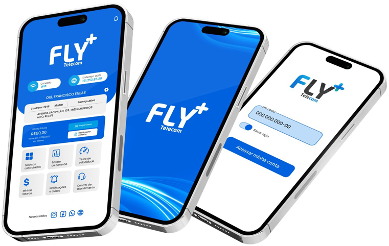

100% FIBRA ÓPTICA
Fly Essencial
300Mega
Para o seu dia a dia.
- Wi-Fi Básico
- Stream filmes e séries
- Atendimento local

+R$69,90/mês
Quero este plano (abre em nova aba)O mundo não para. Sua conexão também não.
Fibra óptica e atendimento de verdade, pertinho de você.
Do primeiro play ao último compromisso.
Tem uma Fly para o seu ritmo.
Para o seu dia a dia.

+Mais conexão para compartilhar.
Para viver todas as possibilidades.
Sua conexão em outro nível.
Contratação sujeita à cobertura e à viabilidade técnica. Confirme valores, fidelidade, equipamentos e condições com nossa equipe antes de contratar.
Conte um pouquinho da sua rotina.
A gente ajuda na escolha.
Filmes, séries e canais ao vivo para a sua próxima pausa.
Consulte o catálogo e as condições de acesso do seu plano.
Da reunião na sala ao filme no quarto. Uma rede pensada para os espaços e a rotina da sua casa.
Tecnologia para distribuir melhor a conexão.
Posicionamento estratégico para reduzir áreas com sinal ruim.
Possibilidade de um ponto adicional, conforme análise técnica.
Segundo ponto com taxa adicional, sujeito à análise de contratação e viabilidade técnica. Equipamentos em comodato.
Representação ilustrativa. A distribuição depende do imóvel.
Somos parte da cidade. Nossa equipe está aqui, investindo em tecnologia e cuidando de cada conexão com atendimento local e humano.
É a tranquilidade de falar com quem está perto. E a liberdade de ir longe.
Rua Coronel Estevam Câmara, 337
Centro · Gravatá, Pernambuco
Informe seu endereço. Nossa equipe confirma a disponibilidade pelo WhatsApp.

Mais autonomia para cuidar da sua internet.
O app Fly deixa tudo mais perto.
O que você precisa, sem dar voltas.
Conte com a gente.
Veja se o roteador está ligado e se os cabos estão bem encaixados. Não desconecte nem dobre o cabo de fibra óptica.
Para um resultado mais consistente, prefira um computador conectado por cabo e pause outros downloads.
Os testes são realizados em serviços externos.Da pequena empresa à operação que exige mais. Conectividade pensada para o ritmo do seu negócio.
Falar com especialista (abre em nova aba)Velocidade simétrica para o trabalho fluir.
Internet dedicada, SLA e IP fixo sob consulta.
Equipe local e monitoramento para sua operação.
Serviços e condições conforme a solução contratada. Consulte uma proposta para sua empresa.
Indique um amigo que contrate a Fly e ganhe 50% de desconto em uma mensalidade.
Quero indicar (abre em nova aba)O desconto é exclusivo para quem indica, após o pagamento da primeira mensalidade do indicado. O setor financeiro entra em contato em até 30 dias. Aplicável a uma mensalidade que não esteja em aberto ou em atraso. Sem limite de indicações.
Precisa de mais uma mão?
Nosso time está por aqui.
Considere as pessoas, os dispositivos e os usos simultâneos da sua casa. Nosso seletor oferece uma sugestão inicial; a equipe Fly pode ajudar a confirmar a escolha.
Download é receber dados, como assistir a um vídeo. Upload é enviar dados, como compartilhar arquivos ou participar de uma videochamada. Consulte as velocidades de cada modalidade na contratação.
Consulte o prazo de instalação para o seu endereço.
O site oficial informa instalação gratuita nos planos residenciais e equipamento em comodato. Confirme as condições para o seu endereço. Pontos adicionais de Wi-Fi têm condições próprias.
Acesse a Central do Assinante ou o aplicativo Fly Telecom com seus dados de acesso para consultar as faturas. Se precisar, fale com nossa equipe.
Você pode usar o WhatsApp, o aplicativo ou ligar para (81) 2011-3396. O atendimento é local, com uma equipe que conhece Gravatá.
A Casa Conectada combina posicionamento estratégico e soluções Wi-Fi 6 e Mesh, conforme disponibilidade. Segundo ponto com taxa adicional, sujeito à análise de contratação e viabilidade técnica. Equipamentos em comodato.
Fale com o atendimento para solicitar uma análise de mudança e conhecer as condições do plano desejado.
A transferência depende da cobertura no novo endereço. Entre em contato com antecedência para confirmar viabilidade, agendamento e condições.